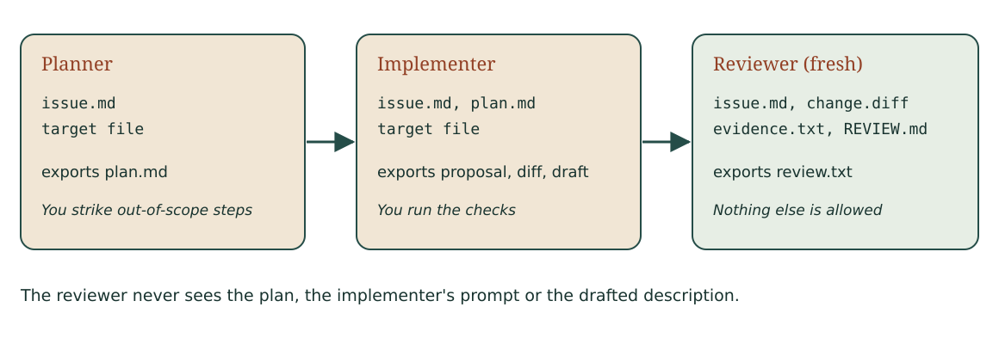

Review and delegate a bounded change
Week 6 · CI dashboard
What decides whether a review point holds?
A small PR can hide a consequential case
Last week we protected caller behavior. This week we review an access decision before trusting the change.
Write your own first review before seeing an assistant's review.
The permission contract
An account may edit exactly when it is active and is an owner or staff member.
Inputs are booleans. All other combinations must deny.
In the dashboard analogy, an archived build is inactive.
The public fixture consistently names that state active.
The proposed guard
return owner or staff and active
The reviewed example uses an active staff account and passes.
Course-authored candidate from the public fixture.
Your first review
Choose a case the active-staff check does not cover. Write its inputs, required result and predicted candidate result.
Then identify the expression responsible. Do this independently before comparing findings.
Operator precedence changes the policy
owner or (staff and active)
For owner=True, staff=False, active=False, the candidate returns True.
The active requirement should apply to the owner too.
The finding has a cause and a specific unauthorized result.
Mechanism: Delegation with an evidence handoff
A bounded issue moves through isolated work and a model review; you verify each point before anyone merges.
A repair to challenge
return active and (owner or staff)
Do not stop at visual clarity. Which allowed and denied cases could falsify this repair?
Both role paths need coverage
| Active | Owner | Staff | Required |
|---|---|---|---|
| False | False | False | Deny |
| False | True | False | Deny |
| False | False | True | Deny |
| False | True | True | Deny |
Inactive state blocks every role combination.
Authorized work must still succeed
| Active | Owner | Staff | Required |
|---|---|---|---|
| True | False | False | Deny |
| True | True | False | Allow |
| True | False | True | Allow |
| True | True | True | Allow |
A deny-all repair would fail the legitimate cases.
A reproducible finding
Location: access guard in candidate revision
Input: owner=True, staff=False, active=False
Required: deny; hand trace of candidate: allow
Cause: owner bypasses the active condition
Consequence: inactive owner's edit can be allowed
Add actual execution evidence when the check runs.
Comparing an assistant's review
After saving your own finding, inspect these authored review claims:
A1: Active staff passes, so the guard is correct. A2: It must also parse the string "false".
Mark each confirmed, refuted or cannot tell. What decides it?
Both claims are refuted
A1: the inactive-owner input is allowed. One passing case cannot establish the policy.
A2: the contract says inputs are booleans; string parsing is invented scope.
For a real assistant response, assess its actual claims; do not assume it made the same mistakes as this exercise.
A bounded review request
Review this guard against the supplied boolean contract. For each finding, give a source location and distinguishing input. Do not change the implementation or expected results.
An assistant's finding remains a hypothesis until reproduced.
Three outcomes for every review point
Confirmed: a reproducer shows it. An input and its actual result, a diff line or an evidence line.
Refuted: runnable evidence shows it is wrong, or the contract or issue shows the requirement it asserts does not exist.
Cannot tell: the files you have cannot decide it. Name what is missing.
The workshop review cycle
Save your first review; reproduce one finding. Then compare the assistant review, revise and rerun unchanged checks.
Use the existing 45-minute activity and one record.
Four questions about your PR
What changed, and why does the contract require it?
Which input could fail? What did you personally verify on this revision?
Completeness of an explanation does not make its claims true.
Exit: a new state in the guard
The candidate adds suspended. The agreed policy says suspended
accounts cannot edit, even when active and staff.
Give one distinguishing input and the check needed before acceptance.
Review the request before you delegate it
A first draft of the issue says:
Only active owners and staff can edit.
Write two readings, an input that separates them and the question you would ask the request's owner.
Words can group two ways, like operators
A: owners and staff must both be active. B: only owners must be active.
can_edit(active=False, owner=False, staff=True): A denies, B allows.
Ask before delegating. Until it is answered, a review point that depends on it is cannot tell.
Three roles, three contexts

You read the plan before anything is implemented.
The reviewer sees the request, the change and the evidence
Its workspace holds issue.md, change.diff, evidence.txt and REVIEW.md.
Nothing else: no plan, no implementer prompt, no drafted description.
The script refuses any other file; the run record lists what the reviewer saw.
What can a fresh-context reviewer still miss?
It runs on the same model and sees only the diff.
Name one kind of defect it cannot catch from those inputs.
Fresh context is not independence
Shared model, shared blind spots. A change that is missing from the diff is invisible in the diff.
So you verify each point, and you read the issue for what the diff lacks.
Review rules a reviewer can check
R3 Inputs stay Python booleans; no parsing, no new input type.
Source: contract "Inputs are booleans"; out of scope "Parsing strings".
Check: the diff adds no str handling, conversion or default argument.
Every rule has a source and a check. "Code should be clean" has neither.
Confirmed, refuted or cannot tell?
The sample change passes all seven checks.
C1 (R3): lines +6 and +7 add string parsing for
active. C2 (R1): no check denies an inactive staff member.
Which evidence decides each comment?
A reproducer decides, not the rule ID
Run the input, point at the diff line, or cite the evidence line.
A comment that cites a rule is still a claim. Rules that keep producing refuted points get rewritten by PR.
No key? Replay the recorded review
The teaching team records a model review of the sample change. Replay it and verify each point the same way; until it is published, verify the course-written sample comments.
For your own M1 change, write the plan and the change yourself,
review it against REVIEW.md and ask a TA.
An issue is data, not authority
The issue names one target, the acceptance criteria and the check to run.
The script refuses an unpinned base, a test file as target, .. paths and unknown lines.
It cannot branch, push, reach the network or run the check.
The pipeline drafts; you explain
The unattended run exports a proposal, a diff and a draft PR description.
The four explanation questions stay as template prompts. The explanation check reports them incomplete until you answer from your own run.
When to run unattended
Helps: independent task, exclusive file, written acceptance and check, time to review.
Costs: requests for every run you discard, review time, stale bases. Rerunning until green selects an output; it does not verify one.
A background agent hands back a pull request
A label on an issue starts the agent in its own workspace. It returns a branch, a description and a run report.
Nobody watched the run. You are the first person to look.
What would have merged?
The token may push agent/ branches, change any file
and merge when the check passes on the agent's branch.
The agent's change also rewrote the expected value of test_format_minutes.
What did the green check show?
Checks the agent cannot edit; a person merges
Run the base commit's tests on the agent's code: FAIL: test_format_minutes.
Remove the merge grant. Narrow the files to what the issue names. Review every hunk and every claim before anyone merges.
P2 and M1 carry this week's work
P2 has two halves: a review of its contract, then your first review of the change, a reproducer and the comparison.
M1 carries the delegated change, your review rules and each review point you verified.
Next week: even a careful review relies on tests. How do we find out which faults those tests can miss?
Workshop and review
Worked notes · Workshop · Self-check
Course case · Week 0 execution route
Use the same work in the linked practice unit or project. No extra report.